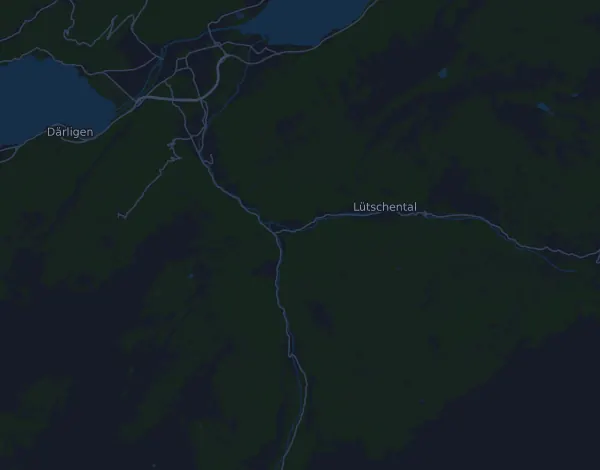

Jungfrau-Marathon 42 km
- Distans
- 42,1 km
- Höjdmeter
- ↑ 1 971 m
- Högsta punkt
- 2 330 m ö.h.
- Underlag
- Väg
- Karaktär
- Mycket kuperad
- Start
- kl. 08:30
Höjdprofil
Förbered dig med Mila
Mila är en löpcoach i appen. Lägger du till ett lopp i din plan planerar coachen veckorna fram till start efter din form, och ger dig en tidsprognos och en plan för tempo, vätska och energi på banan.

Rätt pass. Rätt dag.
Banan

Om banan
Jungfrau-Marathon går nästan bara uppåt: 1971 höjdmeter upp och bara 208 ned, från 566 till 2330 meter över havet. Första halvan är relativt flack. Den enda större stigningen, 128 meter på 6,4 km från km 13, är svag, och vid halvvägs är du bara på omkring 813 meter. Sedan börjar loppet på riktigt. Från km 25 stiger det 388 meter på 3,7 km (10,5 %), och från km 31,7 kommer den längsta klättringen, 554 meter på 6,8 km (8,2 %). Från km 38,7 blir det brantast, 373 meter på 2,3 km (16 %), och sista kilometern stiger 137 meter (14 %) upp till målet.
Banan kräver tålamod och stark gång i brant uppför. Springer du för fort på den flacka första halvan betalar du för det efter km 25, där troligen de flesta går långa partier. Lägg långpassen med mycket höjdmeter, gärna med branta stigningar sent i passet, och träna effektiv gång i 10–16 % lutning. Backintervaller, styrka för vader och lår och träning i att äta under långa uppförspass ger mest. Höjden upp mot 2300 meter kan också kännas på slutet.
Beskrivningen är skriven av Milas coach utifrån banans data.
Klättringar
| Börjar vid | Längd | Höjdmeter | Lutning | Topp (m ö.h.) |
|---|---|---|---|---|
| km 0,0 | 12,7 km | 101 m | 0,8 % | 667 |
| km 13,3 | 6,4 km | 128 m | 2,0 % | 774 |
| km 19,7 | 860 m | 40 m | 4,7 % | 813 |
| km 25,1 | 3,7 km | 388 m | 10,5 % | 1 181 |
| km 28,8 | 2 km | 118 m | 5,8 % | 1 295 |
| km 31,0 | 640 m | 25 m | 3,9 % | 1 305 |
| km 31,7 | 6,8 km | 554 m | 8,2 % | 1 858 |
| km 38,7 | 2,3 km | 373 m | 15,9 % | 2 206 |
| km 41,2 | 970 m | 137 m | 14,2 % | 2 330 |
Inför start
Starttider
- kl. 08:30
Källa: jungfrau-marathon.ch, hämtat 15 oktober 2026
Tempotabell
Jungfrau-Marathon 42 km på 3:00:00 – tid per km och mellantider
4:16 per km · km 10: 42:43 · km 21,1: 1:30:09 · km 30: 2:08:10 · km 40: 2:50:54 · mål: 3:00:00
Jungfrau-Marathon 42 km på 3:30:00 – tid per km och mellantider
4:59 per km · km 10: 49:51 · km 21,1: 1:45:10 · km 30: 2:29:32 · km 40: 3:19:23 · mål: 3:30:00
Jungfrau-Marathon 42 km på 4:00:00 – tid per km och mellantider
5:42 per km · km 10: 56:58 · km 21,1: 2:00:12 · km 30: 2:50:54 · km 40: 3:47:52 · mål: 4:00:00
Jungfrau-Marathon 42 km på 4:30:00 – tid per km och mellantider
6:25 per km · km 10: 1:04:05 · km 21,1: 2:15:13 · km 30: 3:12:16 · km 40: 4:16:21 · mål: 4:30:00
Tiderna förutsätter jämnt tempo hela vägen. Det är ren räkning, ingen prognos: i backar, i trängsel och vid vätskekontroller varierar tempot.
Vanliga frågor
När går Jungfrau-Marathon 42 km?
Jungfrau-Marathon 42 km går lördag 11 september 2027. Kontrollera datum och starttid hos arrangören.
Vilken tid startar Jungfrau-Marathon 42 km?
Enligt arrangören: kl. 08:30.
Hur lång är Jungfrau-Marathon 42 km och hur många höjdmeter är det?
Loppet är 42,1 km långt med 1 971 höjdmeter uppför och 208 nedför. Högsta punkten ligger 2 330 m ö.h.
Hur ser banan på Jungfrau-Marathon 42 km ut?
Banan räknas som mycket kuperad, med 47 höjdmeter per km i snitt. Den har 9 klättringar på minst 25 höjdmeter; den största börjar vid km 31,7: 554 höjdmeter på 6,8 km. Banan går från start till ett mål på en annan plats. Underlaget är väg.
Hur lägger jag upp farten på Jungfrau-Marathon 42 km?
Sikta på en jämn ansträngning snarare än ett jämnt tempo: låt farten gå ner i uppförsbackarna, hämta tillbaka den när det planar ut, och håll igen de första kilometrarna. De största klättringarna börjar vid km 25,1, km 31,7, km 38,7 och km 41,2. I Mila får du en tempoplan för just den här banan efter din egen form.
Fler lopp som det här
Fler lopp i närheten
- Engadin Sommerlauf 23 km22 augusti 2027 · Sils, Schweiz
- Morat-Fribourg 17.17 km3 oktober 2027 · Murten (Morat), Schweiz
- Davos X-Trails (tidigare Swissalpine Davos) – Diamond Run 68 km24 juli 2027 · Davos, Schweiz
- Montreux Trail Festival – MXTREME 100 (102 km)24 juli 2027 · Bex, Schweiz
- Eiger Ultra Trail by UTMB – E101 Ultra Trail17 juli 2027 · Grindelwald, Schweiz
- Trail Verbier St-Bernard by UTMB – X-Alpine (140 km)9 juli 2027 · Verbier, Schweiz
Förbered dig med Mila
Rätt pass. Rätt dag.
Uppgifterna kommer ur banfilen och arrangörens information. Kontrollera datum, starttider och regler hos arrangören.
Mila är inte kopplad till, sponsrad av eller godkänd av arrangören eller loppets sponsorer. Namn och varumärken tillhör sina ägare. Arrangör eller rättighetsinnehavare? Begär ändring eller borttagning